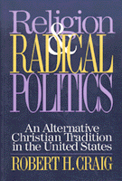

Leftist Christians and radical politics in American history
Leftist Christians and radical politics in American history


 Leftist Christians and radical politics in American history
Leftist Christians and radical politics in American history

|  |
Religion and Radical PoliticsAn Alternative Christian Tradition in the United StatesRobert H. Craigpaper EAN: 978-1-56639-335-5 (ISBN: 1-56639-335-3) |
"This meticulously researched study....discusses a varied array of movements, organizations, and activists, many largely unstudied, who sought to aid the poor and oppressed through Christian social action....[This] thoughtful, lucid book will engage not only historians but also theologians, ethicists, political scientists, sociologists, indeed anyone interested in the convergence of religion and politics in the United States."
—Journal of American History
Robert Craig explores the history of American left-wing Christians who discovered the convergence between radical politics and Christian faith. He examines the life histories of individuals, movements, and organizations that encompass more than a century of American history and discusses the role of religious activism in movements of social transformation.
Craig describes the activists who participated in this (largely ignored) alternative tradition of social action on behalf of the poor. Among those included are Jesse H. Jones, Edward H. Rogers, the Christian Labor Union, and the Knights of labor, which represented workers; Frances Willard and Mother Jones, who worked to improve the status of women and working-class people; Reverdy Ransom, W.E.B. Du Bois, Hubert Harrison, and George Washington Woodbey, who wrestled with the relationship between race and class; Southern radicals, such as Howard Kester, Claude Williams, and the southern Tenant Farmers' Union, which struggled for radical equality; and those involved in the politics of nonviolence, such as Dorothy Day and A.J.. Muste.
Excerpt available at www.temple.edu/tempress
"Religion and Radical Politics is a helpful analysis of several chapters in American a religious history....built around a series of biographical sketches that explore the lives of people such as Terence Powederly, Frances Willard, Mother Jones, George Washington Woodbey, Claude Williams, Howard Kester, Harry F. Ward, A.J. Juste, and Dorothy Day. ...[It] is a remarkably strong book."
—Journal of Church and State
"A major contribution to American history and to Christian ethics. It will be controversial in the best way, raising questions which are the right questions, at least right for those who care for a democracy of human rights, universal participation, and social justice."
—David J. O'Brien, College of the Holy Cross
Acknowledgments
Introduction
1. Nineteenth-Century Labor Radicalism: The Christian Labor Union and the Knights of Labor
2. Religion, Women, and Politics: Feminism, Class, and Labor
3. The Fractured Vision of Christians and Socialists: The Realities of Class and the Invisibility of Race
4. Radical Politics and Southern Prophets: The Struggle for Racial Equality
5. The Great Evasion: Religion, Marxism, and the Politics of Nonviolence
Conclusion
Notes
Index
Robert H. Craig is Associate Professor of Religion and Philosophy at Mount Union College, Ohio.
© 2015 Temple University. All Rights Reserved. This page: http://www.temple.edu/tempress/titles/935_reg.html.